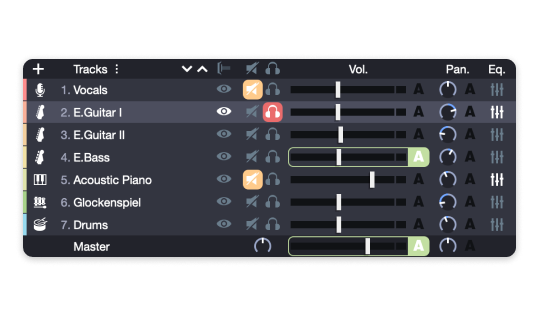

Guitar Pro 到底值不值得装？一份吉他手快问快答
从入门练琴到专业制谱，Guitar Pro 是吉他手绕不开的工具。整理十个高频问题，帮你快速判断这款软件是不是你需要的。
整理一篇关于 Guitar Pro 的快问快答——不管你是刚拿起吉他的新手、想扒带写谱的中级玩家，还是要做教材和出版谱的制作者，这些问题大概率你都想过。
Q1：Guitar Pro 到底是什么？
一句话：这是吉他手的「谱子全家桶」——既是读谱软件，也是写谱软件，还是带音效的播放器。它最核心的定位是六线谱（Tab）编辑器，但内置了混音器、效果器链、音箱模拟、多轨道总谱，一个人就能在里面写出完整的吉他编曲。和那种只能看谱不能改的阅读器完全不是一个东西，它的官网上把这套能力定位成吉他手的一站式创作平台。
Q2：谁真的需要装它？
三类人最有用。第一类是想系统练琴的初学者——Guitar Pro 的播放功能可以跟着谱子同步播放，慢放、循环某一段、开节拍器都能做到，比抱着手机看静态谱效率高得多。第二类是自己扒带写谱的玩家——听到一首歌想把它弹下来，用它可以边听边输音符，写完还能立刻回放检查有没有错。第三类是做教学或出版的人——设计模式能把版面调到出版级，导出 PDF 直接印。如果你连吉他都没摸过，或者只想偶尔搜个谱子看看，那确实没必要装。
Q3：装完直接就能用吗？有没有门槛？
安装包从官方下载渠道获取就行。音符输入有四种方式，上手门槛完全不一样。最简单的是鼠标在六线谱上点品格，零乐理基础也能输，就是慢。快的方式是数字键盘盲打——右手数字键盘输品格数、顶排切时值，熟练了每分钟上百个音符，这个需要练半小时左右才能适应。虚拟指板适合遇到非常规调弦时对着图形点，不会输错品。有 MIDI 设备的人直接弹进去最爽，但硬件门槛高。
Q4：记谱法为什么有三种？到底看哪个？
Guitar Pro 同时支持六线谱、标准五线谱、节奏谱三种记谱法，可以自由切换或组合显示。默认是六线谱加五线谱上下并排——练琴时主要盯六线谱找指法位置，弹完扫一眼五线谱帮你建立指法到音高的对应关系，慢慢就能脱离六线谱也能认五线谱了。扒带写谱时建议六线谱和五线谱都开，有时候指法听起来对，但五线谱显示的音高不对，可能是推弦或滑音的细节没扒准，这个交叉校验特别实用。给学生做教材的话，零基础纯六线谱、有乐理基础的加五线谱、进阶阶段要读纯五线谱。
Q5：内置音色真的够用吗？
如果你只是想听到自己写的谱子大概是什么声音——比如扫弦要听起来像扫弦、solo 要有失真感——内置的音箱模拟器完全够。Guitar Pro 8 内置了从 Fender Twin Reverb（温暖干净）、Marshall JCM800（经典失真）、Vox AC30（英伦中频甜）到 Mesa Boogie Rectifier（重型高增益）这些经典箱头模型，每个都带独立的 Gain、EQ、混响参数。甚至还能选搭配的箱体规格（1×12、2×12、4×12）和麦克风模拟。简单说，Standard E 调弦配 Fender Twin 就是布鲁斯清音，Drop D 调弦换 Marshall JCM800 就是硬摇滚声，这个对应关系是 Guitar Pro 音色塑形的基本心法。

Q6：设计模式是什么鬼？和自动排版有啥区别？
默认情况下 Guitar Pro 自动排版面——每行排几个小节、怎么对齐、在哪分页，全按规则来，大多数谱子够用。但如果你要做教材、做印刷级谱子，就需要手动接管版面了，这就是设计模式。快捷键 Ctrl+Shift+D 打开后，你可以拖拽行尾缩短或拉长每行的小节数、单独拉大某个小节的间距给技巧标记留位置、手动插入分页符把前奏放在一页主歌放在下一页、多轨总谱里对齐不同乐器的小节位置。想把设计模式玩得更溜，可以去翻GuitarPro文档，里面有完整的快捷键表和典型使用场景。
Q7：写谱的时候最容易踩什么坑？
三个。第一个是输入时值搞错了没注意——比如八分音符写成十六分，播放时就全乱了。可以在输音符前先按顶排数字键把时值切对，习惯就好。第二个是自动排版后某些页面特别难看——比如某页只有一两个小节，别忍，直接进设计模式手动调一下每行小节数，五分钟的事。第三个是技巧标记被截断——大范围颤音连线或推弦标注在自动排版时可能放不下，手动拉大那个小节的右边界间距就能解决。
Q8：和手机上的看谱 App 比起来有啥优势？
手机 App 是「消费谱子」的——搜谱、看谱、偶尔慢放循环。Guitar Pro 是「生产谱子」的——你可以从零开始写、可以改别人的谱、可以加效果器混音、可以导出 MIDI 或 PDF。如果你想自己扒一首歌然后存起来长期练，或者想整理一套自己常用的练习集，手机 App 做不了这些。反过来，如果你只需要偶尔搜个谱子弹弹，手机 App 足够了。
Q9：值不值得长期用？
如果你已经在认真练琴、想自己扒带写谱，那值得——它的功能深度是手机 App 没法比的，音符输入速度、音色还原精度、版面控制都是专业级的。如果只是偶尔玩玩，花在练习数字键盘输入和调音色上的时间可能暂时看不到回报。它的定位很明确：从工具变成生产力的分水岭——跨过那一步，它就是你每天打开的软件；没跨过，你可能觉得它太重了。
这些操作细节和实战案例在 GitHub 上有完整的文档目录，GitHub 是主版本，Gitee 同步了一份方便国内拉取，GitCode 那边也能拿到，三份内容一致互为备份。